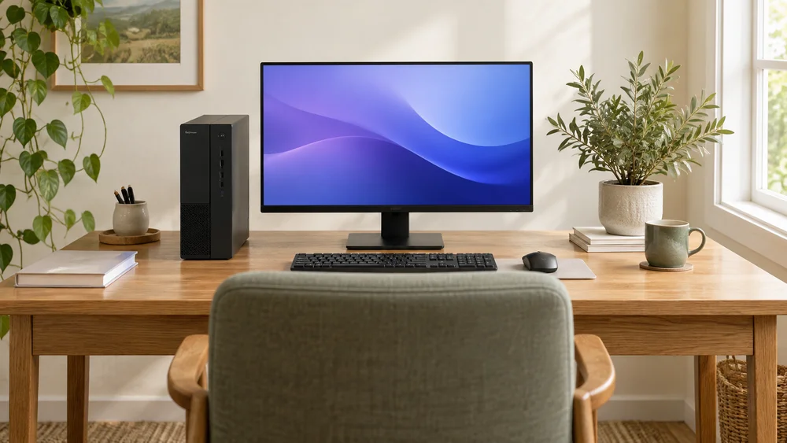
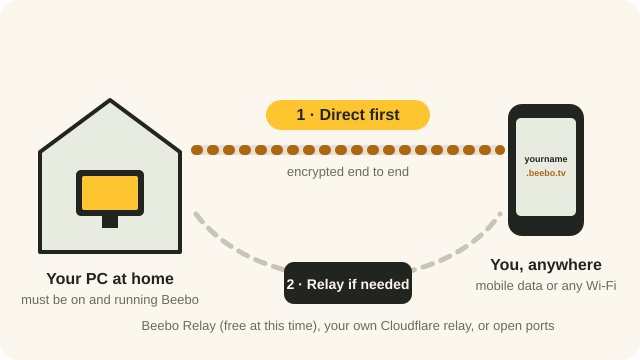

Beebo turns one computer in your home into your family’s streaming server. Five short steps, about ten minutes.
A Windows 10 or 11 computer that stays on when you want to watch, the folders where your movies and shows already live, and each phone that will watch. For the first setup, keep the computer and phones on the same Wi-Fi.

STEP 1
On the computer that holds your movies, download the installer and run it. Beebo opens on its own when it finishes.
Windows may show a blue “Windows protected your PC” box because the app isn’t signed yet. Click More info, then Run anyway.
STEP 2
The first time Beebo opens, it shows a Get Started screen. Choose a username and password. You’ll sign in with these on your phone.
In the app, complete Username, Password and Confirm password, then choose Create account.
You’ll use this username and password to sign in from the Beebo app.
Visual reference rendered from Beebo’s setup component, not a live app screenshot. Enter details and click buttons in the Beebo desktop app, not on this page.
STEP 3
Click Choose Movies folder and pick the folder your films are in. Do the same for TV shows. Beebo builds your library and never moves or changes your files.
Choose Movies folder… opens the folder picker. Choose TV Shows folder… is the separate optional TV folder.
Point Beebo at the folders where your movies and shows already live on this computer.
Visual reference rendered from Beebo’s setup component, not a live app screenshot. Enter details and click buttons in the Beebo desktop app, not on this page.

STEP 4
Install Beebo on every phone in the household that will watch. Your browser may ask permission to install apps; allow it, then tap the downloaded file.
Beebo app v1.30 (build 31) · test build Thu, Sep 17, 2026 at 6:42am Eastern
STEP 5
The computer’s Get Started screen shows a server address, a few numbers like 192.168.1.50:47811. Type it into the Beebo app on your phone, then sign in.
Make sure the phone is on the same Wi-Fi as the computer. Your whole library appears once you sign in.

LATER, FROM ANYWHERE
Your free yourname.beebo.tv address switches itself on a few seconds after Beebo starts. You’ll find it, with a QR code, on the Get Started screen.
To choose a different name, open Settings → Your Beebo address. Not sure your internet allows it? Run the check on this computer, with your phone.
No app needed away from home. Open your address in any browser, sign in, and your whole library is there.
Want an icon? On Android in Chrome, tap the ⋮ menu, then Add to Home screen (or Install app). On iPhone or iPad, use Safari: tap Share, then Add to Home Screen.
On Apple devices this is how you watch for now. An iPhone and iPad app is coming. The only thing you miss is offline downloads, which need the Android app.